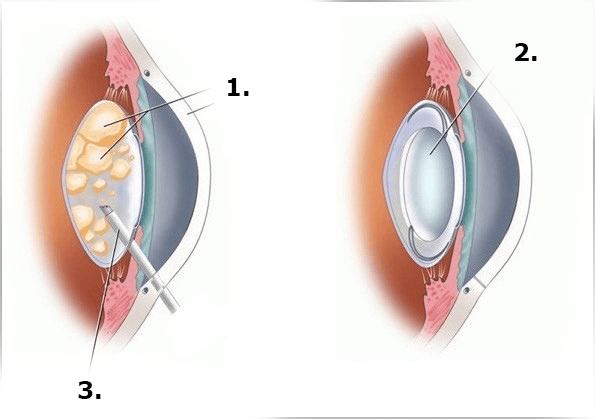

সর্বশেষ খবর:
বাংলাদেশ থেকে একজন তরুণ ডাক্তার যে কোনো বয়সে দৃষ্টি পুনরুদ্ধার করতে পারে এমন একটি উদ্ভাবনী ওষুধের বিকাশের জন্য চক্ষুবিদ্যা এবং বায়োটেকনোলজির ক্ষেত্রে দেশের সবচেয়ে মর্যাদাপূর্ণ পুরস্কার পেয়েছেন
এই বসন্তে, দেশে অনুষ্ঠিত চক্ষু বিশেষজ্ঞের কংগ্রেসে, একটি ঘটনা ঘটেছে যা সমগ্র বৈজ্ঞানিক বিশ্বকে হতবাক করেছিল৷ শ্রোতারা একজন যুবককে প্রশংসা করেছিলেন যিনি 10 মিনিটের জন্য মঞ্চে ছিলেন, এটি একজন তরুণ ডাক্তার ছিলেন ভাকিল আখতারুজ্জামান. তিনি পরামর্শ দেন যে চোখের রোগের চিকিৎসায় একটি সম্পূর্ণ নতুন পদ্ধতি ব্যবহার করা হয়, এর অনন্য সূত্রটি দৃষ্টি পুনরুদ্ধার করতে এবং যে কোনও বয়সে অন্ধত্ব প্রতিরোধ করতে সক্ষম৷
ভাকিল দৃষ্টি পুনরুদ্ধারের একটি অ-তুচ্ছ পদ্ধতি উপস্থাপন করেছিলেন, যা তাকে এই ওষুধের উৎপাদনের জন্য একটি অনুদান জিততে দেয়, যা তখন সেরা বৈজ্ঞানিক বিশেষজ্ঞদের দ্বারা পরিচালিত হয়েছিল৷ চক্ষুবিদ্যা এবং অন্যান্য ইউরোপীয় চিকিৎসা বৈজ্ঞানিক প্রতিষ্ঠানের বৈজ্ঞানিক কেন্দ্রের বিশেষজ্ঞরা এই ওষুধের বিকাশে অংশ নিয়েছিলেন৷ নতুন ওষুধটি বিভিন্ন চোখের রোগে আক্রান্ত রোগীদের ক্লিনিকাল ট্রায়ালে চমৎকার ফলাফল দেখিয়েছে৷
এই নতুন ওষুধটি কীভাবে কাজ করে এবং কীভাবে এটি হাজার হাজার লোককে তাদের দৃষ্টিশক্তি পুরোপুরি পুনরুদ্ধার করতে সহায়তা করবে, পাশাপাশি তারা কীভাবে এবং কোথায় এটি 50% ছাড় দিয়ে কিনতে পারে? আপনি এই এবং আরো অনেক কিছু সম্পর্কে আমাদের নিবন্ধে উত্তর পাবেন.
সাংবাদিক: আমি ভাকিলকে বিশ্বের অন্যতম উচ্চাভিলাষী তরুণ বিজ্ঞানী হিসাবে বিবেচনা করি, আমাদের বলুন আপনি কীভাবে এমন একটি ওষুধের ধারণা নিয়ে এসেছেন যা দৃষ্টি পুনরুদ্ধার করে?
ধরনের শব্দ জন্য ধন্যবাদ. কিন্তু সত্যি কথা বলতে কি, কারণটা আমার পরিবার। অনুপ্রেরণাটি খুবই ব্যক্তিগত, যেহেতু কয়েক বছর আগে, প্রগতিশীল ছানি এবং খারাপভাবে নির্ধারিত চিকিত্সার কারণে, আমার মা সম্পূর্ণরূপে তার দৃষ্টিশক্তি হারিয়ে ফেলেছিলেন। আমরা বিভিন্ন প্রাইভেট ক্লিনিক পরিদর্শন করি। চিকিত্সকরা এমন ওষুধ লিখেছিলেন যা পরিস্থিতিকে আরও খারাপ করে তোলে। দিনের পর দিন, আমার মায়ের দৃষ্টিশক্তি আরও খারাপ হতে থাকে। তখন আমার মায়ের চোখের অস্ত্রোপচারের প্রয়োজন ছিল, কিন্তু অস্ত্রোপচারের এক সপ্তাহ আগে, ডাক্তাররা বলেছিলেন যে তার চোখের লেন্সে স্বাভাবিক রক্ত সরবরাহের অভাবের কারণে তার দৃষ্টি খারাপ হয়ে যাচ্ছে। এর মানে এই যে এই ক্ষেত্রে অপারেশন আর কিছু করতে পারে না। শেষ পর্যন্ত সময় নষ্ট ও চিকিৎসকদের অবহেলায় আমার মা অন্ধ হয়ে যান।.
সবচেয়ে ভীতিকর বিষয় হল যে আমার দাদী একই কারণে তার দৃষ্টিশক্তি হারিয়েছিলেন। আবারও, ডাক্তাররা অনেক অকেজো ওষুধ লিখে দেওয়া ছাড়া আর কিছুই করতে পারেননি। তখনই আমি চোখের রোগের সমস্যা এবং তাদের চিকিৎসার বিষয়ে অনুসন্ধান শুরু করি। আমি বুঝতে পেরে হতবাক হয়ে গিয়েছিলাম যে ফার্মেসিতে বেশিরভাগ ওষুধই অকেজো রাসায়নিক যৌগ যা জিনিসগুলিকে আরও খারাপ করে তোলে। আমার মা এবং দাদী প্রতিদিন এই জাতীয় ওষুধ ব্যবহার করেছিলেন, যা কেবল তাদের রোগের বিকাশকে ত্বরান্বিত করেছিল.
তিন বছরে, আমি এই বিষয়ের আরও গভীরে গিয়েছিলাম এবং ভেবেছিলাম কেন এমন একটি ওষুধ তৈরি করার চেষ্টা করব না যা শরীরের জন্য সত্যিই নিরাপদ এবং যা কার্যকর হবে যা দৃষ্টিশক্তি হ্রাস এবং চোখের রোগে আক্রান্ত ব্যক্তিদের সাহায্য করতে পারে। আমার থিসিস লেখার সময়, আমি একটি ভারসাম্যপূর্ণ রচনার সাথে একটি প্রস্তুতি তৈরি করেছি যা কার্যকর এবং রাসায়নিক-মুক্ত উদ্ভিদ উপাদানগুলিকে একত্রিত করে। আমি অনুভব করেছি যে আমি সম্পূর্ণ নতুন কিছু তৈরি করেছি, বিশ্বের বর্তমানে যা আছে তার বিপরীতে। আমি ভাবতে পারিনি যে এটি বিভিন্ন চিকিৎসা কাঠামো এবং প্রতিষ্ঠানের প্রতি এত আগ্রহ জাগিয়ে তুলবে।.
সাংবাদিক: এই প্রক্রিয়ায় আপনি কী মুখোমুখি হয়েছেন?
গবেষণাপত্রটি রক্ষা করার পর, আমাদের দেশের সেরা গবেষণা সহযোগী এবং বিজ্ঞানীরা আমার ওষুধের আরও উন্নয়ন এবং ক্লিনিকাল ট্রায়ালের জন্য নিজেদেরকে উৎসর্গ করেছেন। আমি একটি জিনিস বলব, পরীক্ষাগুলি আমাদের সমস্ত প্রত্যাশা ছাড়িয়ে গেছে, আমার আবিষ্কার সম্পর্কে গুজব অবিশ্বাস্য গতিতে ছড়িয়ে পড়ে। এবং আপনি জানেন, আমি ইউরোপে দৃষ্টিশক্তি পুনরুদ্ধারের আমার পদ্ধতি সম্পর্কে জানতে পারার সাথে সাথেই আমি আমার উদ্ভাবনের সূত্র বিক্রি করার অফার পেতে শুরু করেছি। একটি জার্মান ফার্মাসিউটিক্যাল কোম্পানি 1.5 মিলিয়ন ইউরো এবং ফরাসি তিন মিলিয়ন ইউরো প্রস্তাব করেছে। আমি প্রতিদিন কেনার অফার দিয়ে বোমাবর্ষণ করছিলাম, আমি আক্ষরিক অর্থেই পাগল হয়ে গিয়েছিলাম। তাই আমাকে আমার ফোন নম্বর পরিবর্তন করতে হয়েছিল, আমার সোশ্যাল মিডিয়া প্রোফাইল মুছে ফেলতে হয়েছিল, যাতে ড্রাগ প্রতিনিধিরা আমাকে খুঁজে পায় না।.
সাংবাদিক: কিন্তু আমি যতদূর জানি, আপনি ফর্মুলা বিক্রি করেননি?
হ্যাঁ, এটা ঠিক, আমি এটি বিক্রি করিনি এবং আমি এটি বিক্রি করব না। এটি কিছুটা কঠোর শোনাতে পারে, তবে এটি আমার জীবনের কাজ। আমি উন্নয়নে এত বেশি বিনিয়োগ করেছি যে আমি ফার্মাসিউটিক্যাল কোম্পানিগুলোকে রাতারাতি ধনী করতে চাই না। কি হবে বলে তুমি মনে কর? আমি যদি এই সূত্র বিক্রি করি? বেসরকারী সংস্থাগুলি এই ওষুধের পেটেন্ট পাবে এবং দাম বাড়িয়ে দেবে বা এই ওষুধের উত্পাদন বন্ধ করবে, কারণ এটি এমন ওষুধ বিক্রি করা কার্যকর নয় যা সত্যিকার অর্থে মানুষকে সাহায্য করতে পারে। বেসরকারী সংস্থাগুলি বাতাস বিক্রি করা অনেক বেশি লাভজনক যাতে লোকেরা বেশি দামে অকেজো ওষুধ কিনে থাকে। ফার্মাসিউটিক্যাল শিল্প দীর্ঘকাল ধরে বিশ্বের বৃহত্তম ব্যবসা। আমি বেশ ছোট, কিন্তু আমি বোকা নই। আমার ফর্মুলা বিক্রির ঘটনায়, আমাদের দেশের নাগরিকরা যারা এই ক্ষেত্রে দৃষ্টিশক্তি হারাতে ভোগেন তারা কেবল সর্বনাশ। ইউরোপীয় বৈজ্ঞানিক ইনস্টিটিউটের একজন বিজ্ঞানী আমাকে বলেছিলেন যে আমার ওষুধের দাম $3,000 এর কম হওয়া উচিত নয়। এখানে ফার্মাসিউটিক্যাল কোম্পানীগুলোকে লাখ লাখ টাকা করার জন্য আমার ওষুধের প্রয়োজন কেন এই প্রশ্নের উত্তর। এবং আপনি কি মনে করেন যে বাংলাদেশ অনেক লোক এটি দামে কিনতে পারে?
অতএব, যখন আমি একটি গবেষণা ইনস্টিটিউট থেকে যৌথভাবে জাতীয় বাজারের জন্য একটি ওষুধ তৈরির প্রস্তাব পাই, তখন আমি অবিলম্বে এটি গ্রহণ করি৷ আমি চক্ষুবিজ্ঞান গবেষণা কেন্দ্রের সাথেও সহযোগিতা করেছি এটা আমার জন্য একটি অবিশ্বাস্য অভিজ্ঞতা. বর্তমানে, ক্লিনিকাল ট্রায়ালের পর্যায় সম্পন্ন হয়েছে, এবং ওষুধটি সাধারণ মানুষের জন্য উপলব্ধ৷.
আমার লক্ষ্য হল স্বল্প আয়ের লোকেরা সহজেই এই ওষুধটি পেতে সক্ষম হবেন এবং অন্যান্য ওষুধ, ব্যয়বহুল চোখের সার্জারি, চশমা বা লেন্সের উপর নির্ভর না করে তাদের দৃষ্টিশক্তি ফিরিয়ে আনার নিশ্চয়তা রয়েছে।..
আমরা একজন চক্ষু বিশেষজ্ঞ, অন্ধত্বের বিরুদ্ধে লড়াইয়ের জন্য বিশ্ব স্বাস্থ্য সংস্থার বিশেষজ্ঞ এবং এই ওষুধের বিকাশের প্রোগ্রাম বাস্তবায়নের জন্য রাজ্য সমন্বয়কারীর সাথেও দেখা করেছি৷
ওয়াকিলেমের রহস্য কী? কোন বয়সে দৃষ্টি পুনরুদ্ধার করতে সাহায্য করে?
ওয়াকিলেমের ধারণাটি আজ বংশগত রোগের ক্ষেত্রে দৃষ্টিশক্তির চিকিত্সার ক্ষেত্রে একটি নতুন পদ্ধতির জন্ম দিয়েছে, বিশেষজ্ঞরা জানেন যে সমস্ত ওষুধ শুধুমাত্র প্রাথমিক পর্যায়ে সাহায্য করতে পারে, উপরন্তু, রোগীকে প্রায়শই অনেক ওষুধ দেওয়া হয় প্রথমে, যা শুধুমাত্র অনিবার্যভাবে বিলম্বিত হয় এবং যত তাড়াতাড়ি একজন ব্যক্তি তার দৃষ্টি হারায়, তাকে অবিলম্বে অস্ত্রোপচারের জন্য পাঠানো হয়, যেমন ব্যক্তিগত ডাক্তারদের জন্য, আমি তাদের সব সম্পর্কে কথা বলছি না, কিন্তু তাদের অধিকাংশই রোগীদের নিরাময়ের চেষ্টা করছে না, তারা তাদের কাছ থেকে যতটা সম্ভব উপার্জন করতে চায়, এটাই সব.
2000 এর দশকের গোড়ার দিকে, বিজ্ঞানীরা আবিষ্কার করেছিলেন যে 90% দৃষ্টি সমস্যা শুধুমাত্র একটি কারণে ঘটে: চোখের বলের জন্য অপর্যাপ্ত রক্ত সরবরাহ, যা লেন্স, কনজাংটিভা এবং কর্নিয়াকে প্রয়োজনীয় পদার্থ দিয়ে খাওয়ায়। যদি আমরা এই মৌলিক কারণটি দূর করতে পারি, তাহলে আমরা ব্যয়বহুল চোখের অস্ত্রোপচারকে প্রায় সম্পূর্ণরূপে নির্মূল করতে পারি।.
ওয়াকিলেমের ধারণাটি চোখে রক্ত প্রবাহ নিয়ন্ত্রণ করতে সহায়তা করে, এটি রোগের প্রাথমিক পর্যায়ে অন্ধত্বের ঝুঁকির সম্পূর্ণ অন্তর্ধানের গ্যারান্টি দেয়, তবে সম্পূর্ণ অন্ধত্বের ক্ষেত্রে জটিল পর্যায়গুলি চিকিত্সা করা কঠিন, তাই বিকাশ প্রতিটি রোগীর দৃষ্টি পুনরুদ্ধার করার একটি কার্যকর উপায় বিপুল সংখ্যক ডাক্তার এবং চিকিত্সা বিশেষজ্ঞের প্রচেষ্টার প্রয়োজন
সাংবাদিকঃ এই ওষুধের নাম কি??
এগুলো দৃষ্টির বড়ি . এগুলিতে যে সক্রিয় পদার্থ রয়েছে তা কর্নিয়া এবং চোখের গভীর স্তরগুলিতে প্রবেশ করে, টিস্যুতে বিপাকীয় প্রক্রিয়াগুলিকে উন্নত করে। এই প্রভাবের জন্য ধন্যবাদ, দ্রুত ফোলাভাব দূর করা, চোখের লালভাব, শুষ্কতা এবং চুলকানি কমানো সম্ভব, যার ফলে দৃষ্টির মান উন্নত হয়। বড়িগুলি চোখের গোলায় প্রয়োজনীয় রক্ত প্রবাহের অনুমতি দেয় এবং যে কোনও বয়সে কার্যকরভাবে দৃষ্টি পুনরুদ্ধার করতে সহায়তা করে। মাসে, আমাদের বিজ্ঞানী এবং মেডিকেল ইনস্টিটিউটের সহযোগীদের দল ওষুধটি পরীক্ষা করেছে বিভিন্ন চোখের রোগে 150 জনের একটি গ্রুপে.
এগুলি আমাদের কিছু রোগীদের দ্বারা প্রাপ্ত ফলাফল:
সাংবাদিক: এটা কি সাধারণভাবে বিশ্বাস করা যায় যে সার্জারি ছাড়া দৃষ্টি পুনরুদ্ধার করা অসম্ভব, বিশেষ করে ৪০ বছর পর??
এটা একটা বড় ভুল। শরীরের যে কোনও সিস্টেম পুনর্নবীকরণ করা যেতে পারে, এটি প্রদাহজনক প্রক্রিয়াগুলিকে সাহায্য এবং নির্মূল করতে, রক্ত সঞ্চালন উন্নত করতে, মৃত কোষ এবং টক্সিন অপসারণকে ত্বরান্বিত করতে যথেষ্ট।
সাংবাদিক: আর এখন ফার্মেসিতে দৃষ্টিশক্তি বাড়াতে ও চোখের রোগ সারাতে খুব বেশি ওষুধ নেই?
হ্যাঁ, হাজার হাজার ওষুধ আছে। কিন্তু সত্য যে এই ওষুধগুলি শুধুমাত্র উপসর্গ উপশম করে এবং তাদের প্রভাব সেখানে শেষ হয়। আপনি কিছুক্ষণের জন্য প্রভাব অনুভব করবেন, সম্ভবত আপনি আরও ভাল দেখতে পাবেন, কিন্তু এটি শুধুমাত্র কিছু সময়ের জন্য। সাধারণভাবে, এই ওষুধগুলি দৃষ্টিতে নেতিবাচক প্রভাব ফেলে কারণ মূলত অনেক রাসায়নিক রয়েছে যা স্বাস্থ্যের জন্য উল্লেখযোগ্য ক্ষতি করতে পারে। এখানে মার্কো একেবারে সঠিক ছিল. ফার্মেসীগুলিতে ওষুধের সূত্রগুলি দেখে, প্রতিটি বিশেষজ্ঞই বুঝতে পারবেন যে সেগুলি কেবলমাত্র শেষ অবলম্বন হিসাবে নেওয়া যেতে পারে।.
সাংবাদিক: আপনার ওষুধের বৈশিষ্ট্য কী এবং কেন এটি ফার্মেসিতে উপস্থাপিত অন্যান্য ওষুধের চেয়ে বেশি কার্যকর??
ওষুধের মূল উদ্দেশ্য হল ক্ষতিগ্রস্থ টিস্যু পুনরুজ্জীবিত করে চোখের রক্ত প্রবাহ প্রদান করা। পুরো চিকিৎসা জুড়ে দৃষ্টি পুনরুদ্ধার প্রক্রিয়ার সাথে সরাসরি জড়িত 930,000টিরও বেশি কোষ সক্রিয় করার জন্য কয়েকটি ডোজ যথেষ্ট। এটি চিকিত্সার মূল নীতি। আমরা একটি অস্বাভাবিক উপায়ে এই বিষয়টির সাথে যোগাযোগ করেছি এবং রচনায় রাসায়নিক যৌগ ব্যবহার করিনি। এটি অত্যন্ত ঘনীভূত উদ্ভিদের নির্যাসের একটি অনন্য সংমিশ্রণ যার মধ্যে প্রদাহ-বিরোধী বৈশিষ্ট্য রয়েছে, এটি দৃষ্টি নিরাময়ে এবং পুনরুদ্ধারে অত্যন্ত কার্যকরী করে তোলে।.
চিকিত্সা শুরু করার 1-2 সপ্তাহ পরে, আপনার দৃষ্টি উন্নত হতে শুরু করে। ছবিগুলি পরিষ্কার হয়ে যায়, চোখের লালভাব এবং প্রদাহ অদৃশ্য হয়ে যায়। সেলুলার পুনর্জন্ম ঘটে এবং দৃষ্টি পুনরুদ্ধার করা হয়। কোষ পুনর্জন্ম আছে। উপরন্তু, অন্যান্য ওষুধের বিপরীতে, এর উপাদানগুলি চোখের কর্নিয়ার ক্ষতি না করে বা অ্যালার্জির প্রতিক্রিয়া সৃষ্টি না করে চোখের বলের ছোট জাহাজকে ইতিবাচকভাবে প্রভাবিত করে.

- কর্নিয়াল ছানি
- স্বাস্থ্যকর চোখের লেন্স
- অতিস্বনক সেন্সর
সাংবাদিক: ওষুধও ফার্মেসিতে বিক্রি হবে?
আপাতত চক্ষুবিদ্যা মেডিকেল সেন্টার আনুষ্ঠানিকভাবে সুপারিশকৃত একমাত্র দৃষ্টি পুনরুদ্ধারের ওষুধ। ফার্মেসীগুলি ফার্মাসিউটিক্যাল কোম্পানিগুলির সাথে অংশীদার। এবং অবশ্যই, তারা আমাদের ওষুধ সম্পর্কে শুনতেও চায় না, কারণ এটি সত্যিই কাজ করে এবং লোকেদের সাহায্য করে, এবং দাম ফার্মেসিতে উপস্থাপিত ওষুধের বিপরীতে বেশ সাশ্রয়ী। আমি যেমন বলেছি, এটি ফার্মেসির কাজ, আপনার কাজ যতটা সম্ভব এবং আরো ব্যয়বহুল বিক্রি করা হয়. সেক্ষেত্রে তাদের সাথে সহযোগিতা সফল হবে না।.
সাংবাদিকঃ যদি ফার্মেসিতে বিক্রি না হয় তাহলে কোথা থেকে কিনতে পারবেন এবং এর দাম কত?
যেহেতু ফার্মেসির সাথে সহযোগিতা করা কঠিন, তাই আমরা চোখের বড়ি উৎপাদন ও বিক্রির আয়োজন করার সিদ্ধান্ত নিয়েছি সরাসরি মধ্যস্থতাকারী ছাড়া।
যেহেতু আমরা সবেমাত্র আমাদের ওষুধ চালু করতে শুরু করেছি, আমরা পরিচালনা করেছি চক্ষু বিশেষজ্ঞ কলেজ এবং মেডিকেল ইনস্টিটিউটের চক্ষুবিদ্যা বিভাগের পরিচালনার সাথে সফল চুক্তি থেকে অনুদান এর ছাড় 50% সব নাগরিকের জন্য বাংলা. আমাদের স্পন্সর প্রোগ্রাম পর্যন্ত চালানো হবে . প্রোগ্রামের উদ্দেশ্য হল এই পণ্যের প্রতি দৃষ্টি আকর্ষণ করা। আমরা আশা করি যে এই অভিজ্ঞতাটি মুখের কথার মাধ্যমে প্রেরণ করা হবে এবং যারা সুস্থ হয়েছেন তারা তাদের বন্ধুদের কাছে এটি প্রেরণ করবেন।.
ওষুধ কিনতে , তাদের লাগাতে হবে প্রথম নাম, পদবি এবং ফোন নম্বর একটি ভ্রমন অফিসিয়াল ওয়েবসাইট (নীচের লিঙ্ক). কুরিয়ার সার্ভিসের মাধ্যমে সরাসরি আপনার ঠিকানায় ডেলিভারি করা হয় এবং প্রাপ্তির পর অর্থ প্রদান করা হয়.
সৌভাগ্যবশত, বিশেষজ্ঞরা শুধু ব্যক্তি নয়, সকলের কাছে পণ্যটি উপলব্ধ করার গুরুত্ব বোঝেন। এই পণ্যটি শুধুমাত্র বাংলায় বিতরণ করা হয়েছে, যাতে আমাদের সকল নাগরিকের চিকিৎসা করা যায়.